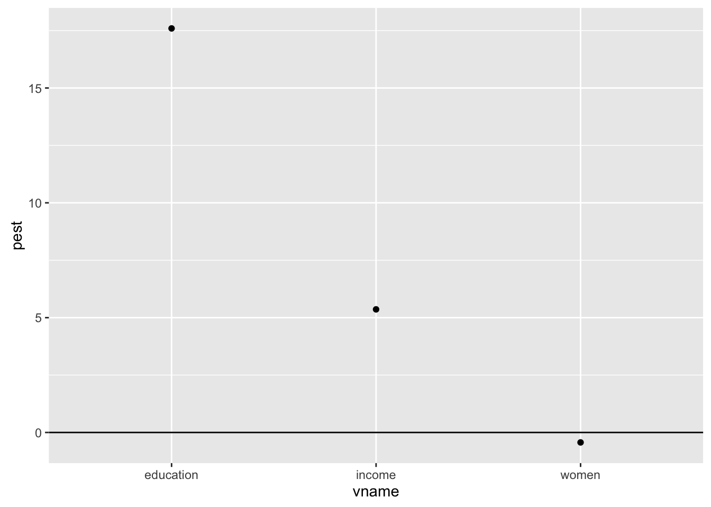

POL S/CS&SS 501, University of Washington, Winter 2016
$$ \DeclareMathOperator{\mean}{mean} \DeclareMathOperator{\var}{var} \DeclareMathOperator{\E}{E} \DeclareMathOperator{\MSE}{MSE} \DeclareMathOperator{\Bias}{Bias} \DeclareMathOperator{\SE}{se} \DeclareMathOperator{\SD}{sd} \DeclareMathOperator{\argmin}{argmin} \DeclareMathOperator{\argmax}{argmax} $$Interpreting linear regression outputs
Andreu Casas
March 4, 2016
Objective
What do the coefficients of linear regressions mean? Or the standard errors and p-values? How can we use them to make predictions? How can we compare the coefficients for different covariates? How can we present linear regression results in papers?
Introduction
In this lab we’ll use the Prestige dataset we already used in the previous lab. Since some of you were having some issues downloading the car package, we decided to include the dataset in the package for this course (uwpols501). Use the install_github() function from the devtools package to update the package. Load also the rest of the packages that we’ll use in this lab.
library(devtools)
install_github(username = "jrnold", repo = "UW-POLS501/r-uwpols501")library(uwpols501)
data("Prestige")
library(broom)
library(dplyr)
library(coefplot)
library(ggplot2)
library(coefplot)Fitting a linear regression
Let’s begin by fitting a linear model with prestige as dependent variable and education, income, and women as covariates; and pull the coefficients table from the regression output using the tidy() function of the broom package.
reg <- lm(prestige ~ education + income + women, data = Prestige)
reg_table <- tidy(reg)
reg_table## term estimate std.error statistic p.value
## 1 (Intercept) -6.794334203 3.2390886463 -2.0976067 3.851306e-02
## 2 education 4.186637275 0.3887012613 10.7708353 2.590069e-18
## 3 income 0.001313560 0.0002777812 4.7287593 7.579372e-06
## 4 women -0.008905157 0.0304070576 -0.2928648 7.702447e-01Challenge
What’s the meaning of all the variables in the regression table?
term: the name of the covariates (also known as independent-control variables, explanatory variables, predictors, etc.).estimate: the coefficient for each covariate. The average effect (rate of change) that a unit change of that covariate has on the dependent variable. The effect (coefficients) is in the units of the dependent variable.std.error: the standard error is the standard deviation of the coefficient. In other words, it describes the uncertainty associated with the estimate. We use the standard errors to compute Confidence Intervals for the coefficients: \(coef \pm t_{df} SE_{coef}\). The critical value \(t_{df}\) depends on the desired confidence level and the degrees of freedom of the model: usually 1.96 (or 2).statistic: t-test statistic. How far away (how many standard deviations away) from the null value the coefficient is. \(T = \dfrac{coefficient - null value}{SE}\). Since in this case the null value is 0 and the standard deviation of the coefficient is the standard error, we obtain the t-statistic by calculating: \(T = \dfrac{coefficient}{SE}\).p.value: the probabilty of observing a coefficient if the null hypothesis were true.
Interpreting regression tables
Let’s focus on the regression output for the covariate education.
edu_reg <- filter(reg_table, term == 'education')
edu_reg## term estimate std.error statistic p.value
## 1 education 4.186637 0.3887013 10.77084 2.590069e-18Challenge
In which units are the independent variable prestige and the covariate education represented? What’s their range?
The outcome variable prestige is measured using the Pineo-Porter prestige score for occupation, with range {14.80 , 87.20}. The independent variable education is measured in years (average years of education), with range {6.3 , 15.9}. The regression coefficient for education is 4.18 and the coefficient SE is 0.39.
This means that, when education increases by 1 unit (so when the average education of people with certain occupation increase 1 year), prestige increases 4.18 units (so the Pineo-Porter prestige scores increases +4.18). For example, let’s create a dataset with 2 different observations where we keep all the variables but education to their mean and where one observation has one more unit of education.
obs1 <- data.frame(education = 13.11,
income = mean(Prestige$income, na.rm = TRUE),
women = mean(Prestige$women, na.rm = TRUE))
obs2 <- mutate(obs1, education = education + 1)
newdata <- bind_rows(obs1, obs2)Now let’s use the model coefficients to predict prestige values for both observations and see what’s the difference between them. Since the only thing that changes is a unit change on education, we should expect an increase of 4.18 on prestige. To make the predictions we will use the predict() command.
pred1 <- predict(reg, newdata)
pred1## 1 2
## 56.76387 60.95051pred1[2] - pred1[1]## 2
## 4.186637We can calculate confidence intervals around those estimates using the arguments interval and level in the predict() command.
pred_CI <- predict(reg, newdata, interval = "confidence", level = .95)
pred_CI## fit lwr upr
## 1 56.76387 54.37125 59.15650
## 2 60.95051 57.92689 63.97413Challenge
Predict the Pineo-Porter prestige score (+ 95% CIs) for a “simulated” occupation where 100% of the people are men (women == 0) and the average years of education is 10.74 (the mean value for that variable) and the average income is $6798 (also the mean).
Do the same for another simulated occupation where 100% of the people are women (women == 100) but have the same average education and income.
sc_men <- data.frame(women = 0,
education = 10.74,
income = 6798)
sc_women <- data.frame(women = 100,
education = 10.74,
income = 6798)
newdata2 <- bind_rows(sc_men, sc_women)
mw_pred <- predict(reg, newdata, level = 0.95, interval = "confidence")
mw_pred## fit lwr upr
## 1 56.76387 54.37125 59.15650
## 2 60.95051 57.92689 63.97413To compare predictions (+95% CIs) easily we can use the errorbar geom from ggplot2. If we want to use data into the output of the predict() command to create the plot, we first need to transform it to data.frame format using tidy() from broom.
mw_pred_tidy <- tidy(mw_pred)
mw_pred_tidy <- mutate(mw_pred_tidy, scenario = c("men", "women"))
ggplot(mw_pred_tidy, aes(x = scenario, y = fit, ymin = lwr, ymax = upr)) +
geom_pointrange() +
coord_flip()
This is how we usually want to present our results in papers. It is easier to understand graphs that show effects (predicted values or probabilities) rather than regression tables.
Comparing the effect of all the covariates
There are some packages that allow you to plot the regression coefficients and present them visually. For example, one of these functions is coefplot() of the coefplot package.
coefplot(reg)Challenge
What’s the problem with the previous graph? Is it useful to compare the effect of the different covariates?
With the previous graph we cannot compare the effect of each covaraite because they are in different units. To make such comparisons, we should estimate the effect of a similar change of each variable keeping the others constant. For example, let’s compare the effect that each variable has on the outcome variable when going from its 1st to 3rd quantile.
effects_table <- data.frame(v1 = NULL,
v2 = NULL)
newdata3 <- data.frame(education = rep(mean(Prestige$education), 2),
income = rep(mean(Prestige$income), 2),
women = rep(mean(Prestige$women), 2))
for (i in 2:nrow(reg_table)) {
vname <- reg_table$term[i]
vcontent <- Prestige[,vname]
q1 <- quantile(vcontent, .25, na.rm = TRUE)
q3 <- quantile(vcontent, .75, na.rm = TRUE)
newdata_var <- newdata3
newdata_var[, vname] <- c(q1, q3)
pred_sc <- predict(reg, newdata_var)
pest <- as.numeric(pred_sc[2] - pred_sc[1])
new_obs <- data.frame(pest, vname)
effects_table <- bind_rows(effects_table, new_obs)
}## Warning in rbind_all(x, .id): Unequal factor levels: coercing to charactereffects_table## Source: local data frame [3 x 2]
##
## pest vname
## (dbl) (chr)
## 1 17.5943431 education
## 2 5.3609685 income
## 3 -0.4328797 womenThen we can plot the effect of each variable when moving from their first to the third quantile.
ggplot(effects_table, aes(x = vname, y = pest)) +
geom_point() +
geom_hline(yintercept = 0)

This work is licensed under a Creative Commons Attribution-NonCommercial-ShareAlike 4.0 International License. R code is licensed under a BSD 2-clause license.